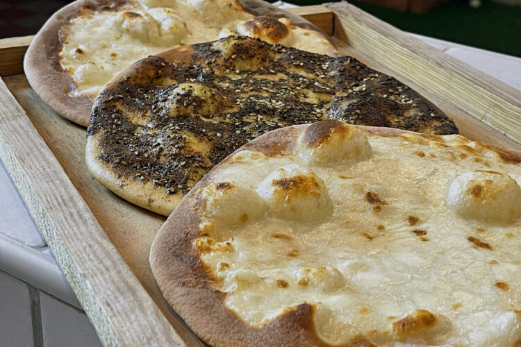

Sanfi's Food
From syria with LoveSanfi's Syrian Restaurant & Cafe
MANAEESH, KNAFEH & MORE

Kan-What?
K-naf-feh
Knafeh : is a popular traditional Middle Eastern dessert made with spun pastry called kataifi, soaked in a sweet, sugar-based syrup called attar, and typically layered with cheese, or with other ingredients such as clotted cream, pistachio or nuts, depending on the region. It is popular in the Middle East. Variants are also found in Turkey, Greece, and the Balkans.

Manaeesh
Prepared Daily, Baked Fresh
Manakeesh are a Middle-eastern flatbread typically eaten for breakfast. Delicious and crispy homemade dough is topped with a za’atar topping or a blend of cheeses for two different variety of Manakeesh.
Coffee & Tea
Served All Day
We selected the finest tasting coffee beans with the highest consistent natural caffeine content and flash roasted them to a rich city roast. This coffee does taste great and has a higher level of caffeine that will perk you up! Works better than an energy drink and you don't have to add sugar.